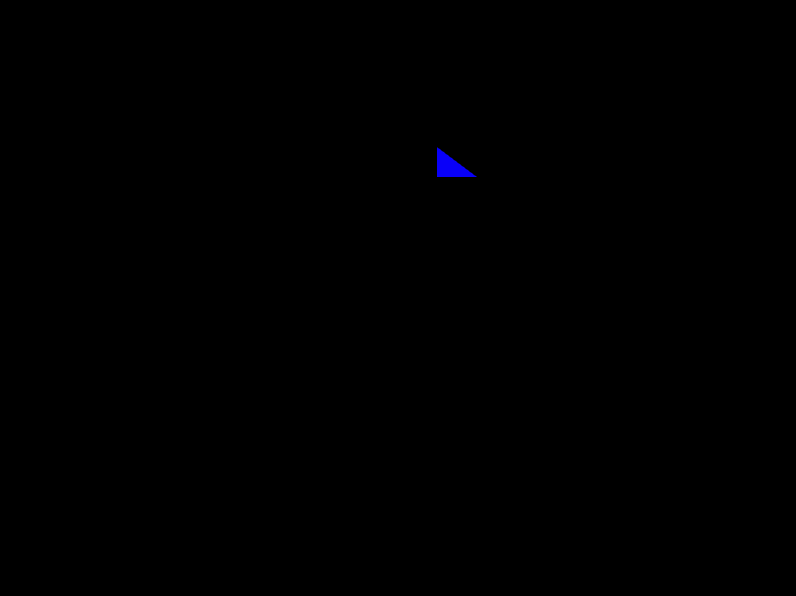

With the development of front-end technology, I first approached Threejs two years ago because of business needs. Of course, this isn’t the first time I’ve heard of Threejs. When I had some basic knowledge of Threejs. I became interested in webgl.
I will record my learning path, and I would be pleasured if these blogs could be helpful to you.
Firstly, I learned the basics of WebGL at bilibili, here is the link. I want to say, dont’t worry about what you don’t understand at the beginning. Just follow the course, quantitative change would produe qualitative change.
Here we go, we will use Webgl to draw a triangle on the page, the page renderings are as follows:

- WebGL is developed on canvas, so we need create a canvas label in html page, like this:
<canvas id="webglCanvas" width="700" height="700"></canvas>
Then let’s add some js code to the body tag and draw a triangle on the canvas.
firstly, we need a webgl context
1
2
3
4
5
6
7
8
9
10
11
12
13
14
15
16
17
18
19let webgl;
// Set vertex shader content
let vertexString = `
attribute vec3 a_position;
void main() {
gl_Position = vec4(a_position, 1.0);
}
`;
// Set fragment shader content
let fragmentString = `
void main() {
gl_FragColor = vec4(0.0, 0.0, 1.0, 1.0);
}
`;
function init() {}
function initWebgl() {}
function initShader() {}
function initBuffer() {}
function draw();when the page loaded, set the js code to trigger method
1
2
3
4
5
6function init() {
initWebgl();
initShader();
initBuffer();
draw();
}Here, the webgl context is obtained and set through the document element
1
2
3
4
5
6
7
8function initWebgl() {
// Get the canvas element through id
const div = document.getElementById('webglCanvas');
// Assign webgl context to global object webgl
webgl = div.getContext('webgl');
// Set the webgl view size
webgl.viewport(0, 0, div.clientWidth, div.clientHeight);
}Next, we need to initialize shaders, inclouding vertex shader and fragment shader
1
2
3
4
5
6
7
8
9
10
11
12
13
14
15
16
17
18
19
20
21
22
23function initShader() {
// create shader container
let shaderVs = webgl.createShader(webgl.VERTEX_SHADER);
let shaderFs = webgl.createShader(webgl.FRAGMENT_SHADER);
// Associate the shader container with the content
webgl.shaderSource(shaderVs, vertexString);
webgl.shaderSource(shaderFs, fragmentString);
// compile shader
webgl.compileShader(shaderVs);
webgl.compileShader(shaderFs);
// Create program
let program = webgl.createProgram();
// Associate the shader with program
webgl.attachShader(program, shaderVs);
webgl.attachShader(program, shaderFs);
webgl.linkProgram(program);
webgl.useProgram(program);
webgl.program = program;
}Then, we need to set buffer data、create program linkProgram and useProgram
1
2
3
4
5
6
7
8
9
10
11
12
13
14
15
16
17function initBuffer() {
// Sets the vertex coordinates of the triangle
let arr = [
0.1, 0.4, 0,
0.1, 0.5, 0,
0.2, 0.4, 0
];
// Create a buffer and configure it
let float = new Float32Array(arr);
let buffer = webgl.createBuffer();
webgl.bindBuffer(webgl.ARRAY_BUFFER, buffer);
webgl.bufferData(webgl.ARRAY_BUFFER, float, webgl.STATIC_DRAW);
let aPosition = webgl.getAttribLocation(webgl.program, 'a_position');
webgl.vertexAttribPointer(aPosition, 3, webgl.FLOAT, false, 0, 0);
webgl.enableVertexAttribArray(aPosition);
}Finally, it’s time to draw WebGL in canvas
1
2
3
4
5function draw() {
webgl.clearColor(0.0, 0.0, 0.0, 1.0);
webgl.clear(webgl.COLOR_BUFFER_BIT);
webgl.drawArrays(webgl.TRIANGLES, 0, 3);
}
Here are some of my summaries after watching the basic course:
The browser and Webgl have their own coordinate systems, the brower takes the upper left corner as it’s origin, and Webgl takes the canvas center as it’s coordinate origin

Shader , in Webgl we need set vertex shader and fragment shader, and we use attribute or uniform to set the data

Buffer, we use typed array to set buffer and bind this buffer to Webgl program
Then, empty the canvas and draw with drawArrays or drawElements API
If you need, here are the full cod link. And if you find any mistakes in this article, please feel free to comment. My email is echowangyue@aliyun.com